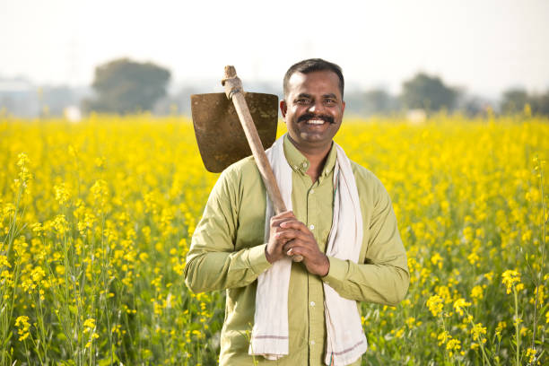

About AgriFit
Agriculture operating system for measurable growth
AgriFit bridges training, implementation, tracking, certification, and community support so users can improve real outcomes.
We position agriculture as a performance discipline — structured, measurable, and professionally managed.